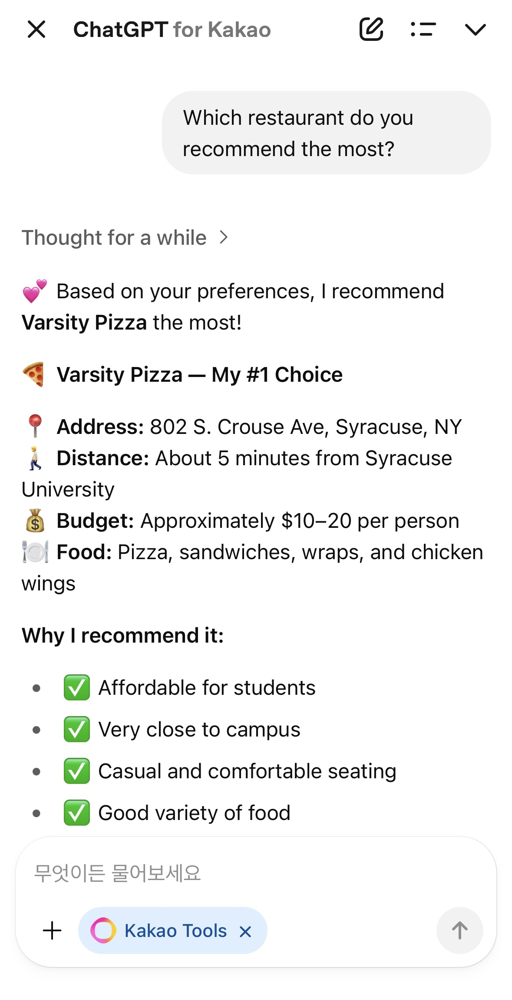
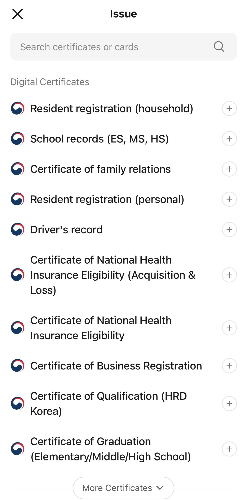
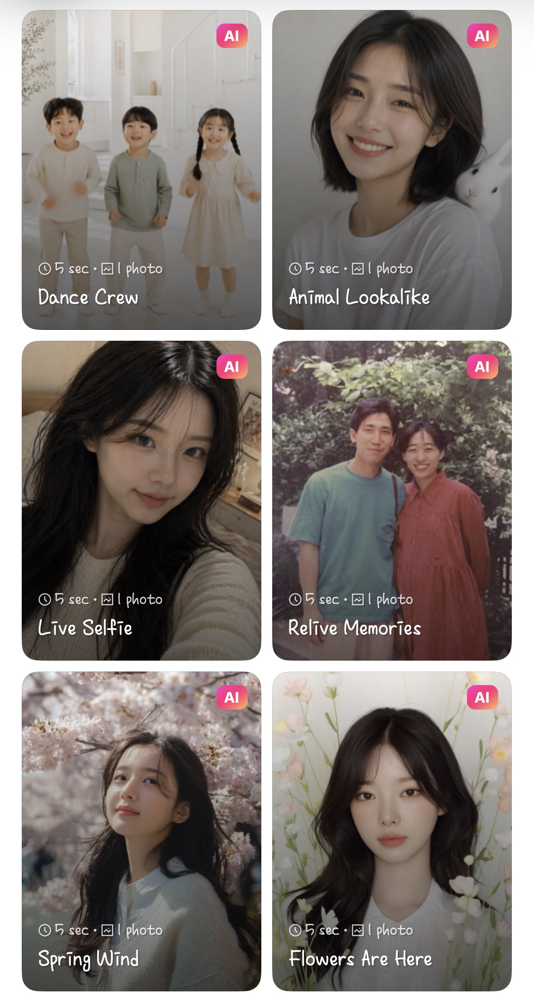
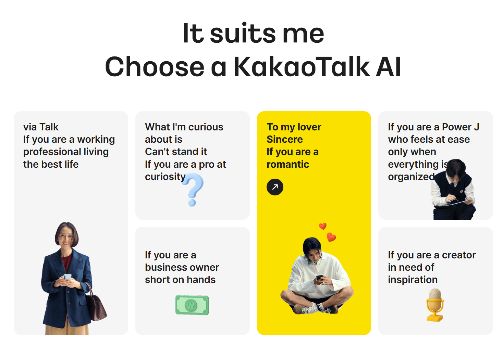

KANANA'S FEATURES AND EVERYDAY USES
Kanana offers several AI-powered features that make communication and daily planning easier. It can summarize conversations, recommend useful information, organize schedules, and connect users to services within KakaoTalk.
KANANA'S MAIN FEATURE
1. Chat and Call Summaries
Kanana can summarize long KakaoTalk conversations so that users can quickly understand the main points. It can also organize the key information from Voice Talk calls, which are free data-based calls offered through KakaoTalk.
This feature is especially useful when users miss messages in a busy group chat or need to review important information from a conversation.
2. Proactive Suggestions Based on Conversations

As an on-device AI, Kanana can understand the context of KakaoTalk conversations and recommend useful information without waiting for the user to ask.
For example, if friends are discussing plans to meet, Kanana can suggest places that fit the group's needs. It can also use information from previous conversations to create a daily briefing and remind users about tasks or upcoming plans.
3. ChatGPT for Kakao
ChatGPT for Kakao is an AI service that combines Kakao's services with ChatGPT's technology. The ChatGPT model can connect with tools and services available through KakaoTalk, including reservations, Kakao Gifts, and Maps.
Instead of only providing information, the service can help users take the next step. For example, it may guide users from searching for a restaurant to making a reservation, or from choosing a gift to purchasing and sending it through KakaoTalk.

4. AI Government Assistant

KakaoTalk's AI government assistant allows people to access public services by communicating with AI in a conversational way.
Users can request approximately 100 types of electronic documents, including resident registration certificates, and make reservations for public facilities without going through complicated procedures on government platforms such as Government24.
5. Kanana Templates
Kanana Templates can transform photos shared through KakaoTalk into short AI-generated videos.
After sending a photo through KakaoTalk, users can select Create as a Video and choose from a variety of templates. Kanana can then turn the photo into a natural-looking video in about one minute.

KANANA IN EVERYDAY LIFE
Explore how Kanana could support different lifestyles

1. For Working Professionals
- Manage schedules and receive reminders through AI-powered daily briefings.
- Automatically recognize appointments and important dates from KakaoTalk conversations.
- Find restaurants and meeting locations, view reviews, and make reservations through KakaoMap.
2. For Middle & High School Students
- Organize assignments and deadlines from KakaoTalk group chats.
- Receive timely reminders to stay on track with schoolwork.
- Create personalized study plans based on exams, weak subjects, and available study time.
3. For College Students
- Plan group trips with AI recommendations for accommodations, restaurants, and attractions.
- Explore locations and access reservations through KakaoMap without leaving KakaoTalk.
- Receive birthday reminders and personalized gift recommendations, with easy purchasing through Kakao Gifts.